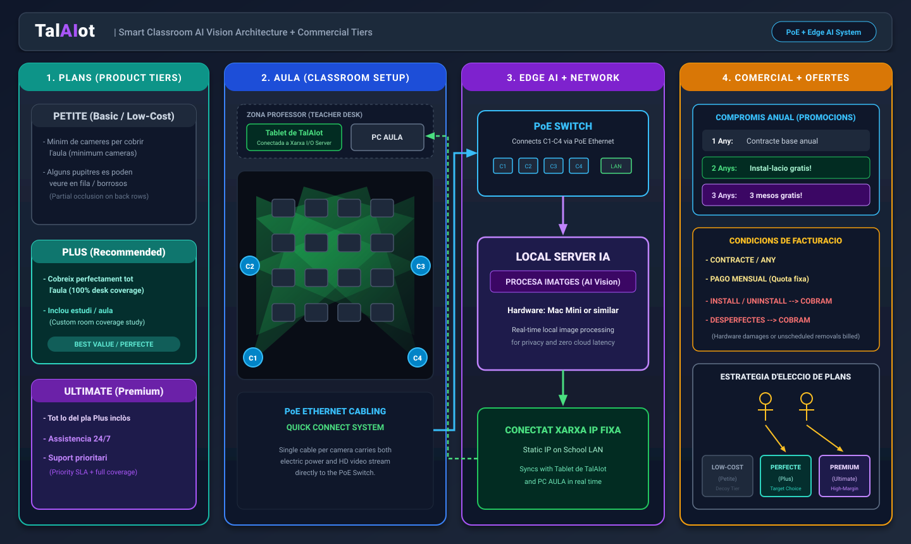

Definició de l'estructura del projecte empresarial
22/10/2026
A TalAIot hem dissenyat l'arquitectura global del projecte, connectant els aspectes tècnics de desplegament a l'aula amb els models comercials orientats a centres educatius i universitats.

1. Plans de producte i nivells comercials
Per donar resposta a diferents tipologies d'aules i capacitats pressupostàries, hem establert tres opcions de servei:
- Petite (Bàsic / Baix cost): Nombre mínim de càmeres necessàries per cobrir l'espai general. Pot generar certes oclusions parcials a les files del fons, pensat per a proves inicials en grups reduïts.
- Plus (Recomanat): Cobertura del 100% de la superfície de pupitres mitjançant un estudi previ de l'aula. Ofereix la ràtio òptima entre precisió i cost d'instal·lació.
- Ultimate (Premium): Cobertura integral d'alta resolució, assistència tècnica 24/7 i suport prioritari amb temps de resposta garantit per a aules d'alta exigència acadèmica.
2. Disposició a l'aula i dispositius
La instal·lació manté la màxima discreció i facilitat d'ús tant per al professorat com per a l'alumnat:
- Tauleta de control: La Tablet de TalAIot se situa a la taula del docent, connectada a la xarxa del servidor local d'aula per mostrar alertes visuals i l'estat dels pupitres sense interrompre el ritme de la prova.
- Càmeres zenitals: Conjunt de sensors òptics instal·lats al sostre que proporcionen una visió zenital directa, eliminant angles cecs i minimitzant les oclusions habituals de les càmeres frontals.
Processament local i privacitat (Edge AI): Totes les càmeres s'alimenten i connecten mitjançant
commutadors PoE (Power over Ethernet) cap a un servidor d'inferència Edge AI ubicat físicament a l'aula o
al centre. Això garanteix un temps de resposta immediat i assegura que cap imatge sense xifrar surti de la xarxa
local.
Propers passos
Un cop definida l'estructura física i comercial, el següent pas serà la configuració del subdomini corporatiu, el repositori central de GitHub i els processos d'integració contínua per a la publicació automàtica del blog.